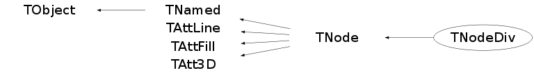

class TNodeDiv: public TNode
The TNodeDiv class
Function Members (Methods)
public:
| TNodeDiv() | |
| TNodeDiv(const TNodeDiv&) | |
| TNodeDiv(const char* name, const char* title, const char* shapename, Int_t ndiv, Int_t axis, Option_t* option = "") | |
| TNodeDiv(const char* name, const char* title, TShape* shape, Int_t ndiv, Int_t axis, Option_t* option = "") | |
| virtual | ~TNodeDiv() |
| void | TObject::AbstractMethod(const char* method) const |
| virtual void | TObject::AppendPad(Option_t* option = "") |
| virtual void | TNode::Browse(TBrowser* b) |
| virtual void | TNode::BuildListOfNodes() |
| virtual void | TNode::cd(const char* path = 0)MENU |
| static TClass* | Class() |
| virtual const char* | TObject::ClassName() const |
| virtual void | TNamed::Clear(Option_t* option = "") |
| virtual TObject* | TNamed::Clone(const char* newname = "") const |
| virtual Int_t | TNamed::Compare(const TObject* obj) const |
| virtual void | TNamed::Copy(TObject& named) const |
| virtual void | TObject::Delete(Option_t* option = "")MENU |
| Int_t | TAttLine::DistancetoLine(Int_t px, Int_t py, Double_t xp1, Double_t yp1, Double_t xp2, Double_t yp2) |
| virtual Int_t | TNode::DistancetoPrimitive(Int_t px, Int_t py) |
| virtual void | Draw(Option_t* option = "") |
| virtual void | TObject::DrawClass() constMENU |
| virtual TObject* | TObject::DrawClone(Option_t* option = "") constMENU |
| virtual void | TNode::DrawOnly(Option_t* option = "") |
| virtual void | TObject::Dump() constMENU |
| virtual void | TObject::Error(const char* method, const char* msgfmt) const |
| virtual void | TObject::Execute(const char* method, const char* params, Int_t* error = 0) |
| virtual void | TObject::Execute(TMethod* method, TObjArray* params, Int_t* error = 0) |
| virtual void | TNode::ExecuteEvent(Int_t event, Int_t px, Int_t py) |
| virtual void | TObject::Fatal(const char* method, const char* msgfmt) const |
| virtual void | TNamed::FillBuffer(char*& buffer) |
| virtual TObject* | TObject::FindObject(const char* name) const |
| virtual TObject* | TObject::FindObject(const TObject* obj) const |
| virtual Option_t* | TObject::GetDrawOption() const |
| static Long_t | TObject::GetDtorOnly() |
| virtual Color_t | TAttFill::GetFillColor() const |
| virtual Style_t | TAttFill::GetFillStyle() const |
| virtual const char* | TObject::GetIconName() const |
| virtual Color_t | TAttLine::GetLineColor() const |
| virtual Style_t | TAttLine::GetLineStyle() const |
| virtual Width_t | TAttLine::GetLineWidth() const |
| TList* | TNode::GetListOfNodes() const |
| virtual TRotMatrix* | TNode::GetMatrix() const |
| virtual const char* | TNamed::GetName() const |
| virtual TNode* | TNode::GetNode(const char* name) const |
| virtual char* | TNode::GetObjectInfo(Int_t px, Int_t py) const |
| static Bool_t | TObject::GetObjectStat() |
| virtual Option_t* | TNode::GetOption() const |
| virtual TNode* | TNode::GetParent() const |
| TShape* | TNode::GetShape() const |
| virtual const char* | TNamed::GetTitle() const |
| virtual UInt_t | TObject::GetUniqueID() const |
| Int_t | TNode::GetVisibility() const |
| virtual Double_t | TNode::GetX() const |
| virtual Double_t | TNode::GetY() const |
| virtual Double_t | TNode::GetZ() const |
| virtual Bool_t | TObject::HandleTimer(TTimer* timer) |
| virtual ULong_t | TNamed::Hash() const |
| virtual void | TNode::ImportShapeAttributes() |
| virtual void | TObject::Info(const char* method, const char* msgfmt) const |
| virtual Bool_t | TObject::InheritsFrom(const char* classname) const |
| virtual Bool_t | TObject::InheritsFrom(const TClass* cl) const |
| virtual void | TObject::Inspect() constMENU |
| void | TObject::InvertBit(UInt_t f) |
| virtual TClass* | IsA() const |
| virtual Bool_t | TObject::IsEqual(const TObject* obj) const |
| virtual Bool_t | TNode::IsFolder() const |
| Bool_t | TObject::IsOnHeap() const |
| virtual Bool_t | TNamed::IsSortable() const |
| virtual Bool_t | TAttFill::IsTransparent() const |
| Bool_t | TObject::IsZombie() const |
| virtual void | TNode::Local2Master(const Double_t* local, Double_t* master) |
| virtual void | TNode::Local2Master(const Float_t* local, Float_t* master) |
| virtual void | TNode::ls(Option_t* option = "2") constMENU |
| virtual void | TNode::Master2Local(const Double_t* master, Double_t* local) |
| virtual void | TNode::Master2Local(const Float_t* master, Float_t* local) |
| void | TObject::MayNotUse(const char* method) const |
| virtual void | TAttLine::Modify() |
| virtual Bool_t | TObject::Notify() |
| void | TObject::Obsolete(const char* method, const char* asOfVers, const char* removedFromVers) const |
| static void | TObject::operator delete(void* ptr) |
| static void | TObject::operator delete(void* ptr, void* vp) |
| static void | TObject::operator delete[](void* ptr) |
| static void | TObject::operator delete[](void* ptr, void* vp) |
| void* | TObject::operator new(size_t sz) |
| void* | TObject::operator new(size_t sz, void* vp) |
| void* | TObject::operator new[](size_t sz) |
| void* | TObject::operator new[](size_t sz, void* vp) |
| virtual void | Paint(Option_t* option = "") |
| virtual void | TObject::Pop() |
| virtual void | TNamed::Print(Option_t* option = "") const |
| virtual Int_t | TObject::Read(const char* name) |
| virtual void | TNode::RecursiveRemove(TObject* obj) |
| virtual void | TAttFill::ResetAttFill(Option_t* option = "") |
| virtual void | TAttLine::ResetAttLine(Option_t* option = "") |
| void | TObject::ResetBit(UInt_t f) |
| virtual void | TObject::SaveAs(const char* filename = "", Option_t* option = "") constMENU |
| virtual void | TAttFill::SaveFillAttributes(ostream& out, const char* name, Int_t coldef = 1, Int_t stydef = 1001) |
| virtual void | TAttLine::SaveLineAttributes(ostream& out, const char* name, Int_t coldef = 1, Int_t stydef = 1, Int_t widdef = 1) |
| virtual void | TObject::SavePrimitive(ostream& out, Option_t* option = "") |
| void | TObject::SetBit(UInt_t f) |
| void | TObject::SetBit(UInt_t f, Bool_t set) |
| virtual void | TObject::SetDrawOption(Option_t* option = "")MENU |
| static void | TObject::SetDtorOnly(void* obj) |
| virtual void | TAttFill::SetFillAttributes()MENU |
| virtual void | TAttFill::SetFillColor(Color_t fcolor) |
| virtual void | TAttFill::SetFillStyle(Style_t fstyle) |
| virtual void | TAttLine::SetLineAttributes()MENU |
| virtual void | TAttLine::SetLineColor(Color_t lcolor) |
| virtual void | TAttLine::SetLineStyle(Style_t lstyle) |
| virtual void | TAttLine::SetLineWidth(Width_t lwidth) |
| virtual void | TNode::SetMatrix(TRotMatrix* matrix = 0) |
| virtual void | TNode::SetName(const char* name) |
| virtual void | TNode::SetNameTitle(const char* name, const char* title) |
| static void | TObject::SetObjectStat(Bool_t stat) |
| virtual void | TNode::SetParent(TNode* parent) |
| virtual void | TNode::SetPosition(Double_t x = 0, Double_t y = 0, Double_t z = 0) |
| virtual void | TNamed::SetTitle(const char* title = "")MENU |
| virtual void | TObject::SetUniqueID(UInt_t uid) |
| virtual void | TNode::SetVisibility(Int_t vis = 1)MENU |
| virtual void | ShowMembers(TMemberInspector& insp) |
| virtual Int_t | TNamed::Sizeof() const |
| virtual void | TNode::Sizeof3D() const |
| virtual void | Streamer(TBuffer& b) |
| void | StreamerNVirtual(TBuffer& b) |
| virtual void | TObject::SysError(const char* method, const char* msgfmt) const |
| Bool_t | TObject::TestBit(UInt_t f) const |
| Int_t | TObject::TestBits(UInt_t f) const |
| virtual void | TNode::UpdateMatrix() |
| virtual void | TNode::UpdateTempMatrix(const Double_t* dx1, const Double_t* rmat1, Double_t x, Double_t y, Double_t z, Double_t* matrix, Double_t* dxnew, Double_t* rmatnew) |
| virtual void | TObject::UseCurrentStyle() |
| virtual void | TObject::Warning(const char* method, const char* msgfmt) const |
| virtual Int_t | TObject::Write(const char* name = 0, Int_t option = 0, Int_t bufsize = 0) |
| virtual Int_t | TObject::Write(const char* name = 0, Int_t option = 0, Int_t bufsize = 0) const |
protected:
| virtual void | TObject::DoError(int level, const char* location, const char* fmt, va_list va) const |
| void | TObject::MakeZombie() |
| TNode& | TNode::operator=(const TNode&) |
Data Members
public:
| enum TNode::[unnamed] { | kSonsInvisible | |
| }; | ||
| enum TObject::EStatusBits { | kCanDelete | |
| kMustCleanup | ||
| kObjInCanvas | ||
| kIsReferenced | ||
| kHasUUID | ||
| kCannotPick | ||
| kNoContextMenu | ||
| kInvalidObject | ||
| }; | ||
| enum TObject::[unnamed] { | kIsOnHeap | |
| kNotDeleted | ||
| kZombie | ||
| kBitMask | ||
| kSingleKey | ||
| kOverwrite | ||
| kWriteDelete | ||
| }; |
protected:
| Int_t | fAxis | Axis number where object is divided |
| Color_t | TAttFill::fFillColor | fill area color |
| Style_t | TAttFill::fFillStyle | fill area style |
| Color_t | TAttLine::fLineColor | line color |
| Style_t | TAttLine::fLineStyle | line style |
| Width_t | TAttLine::fLineWidth | line width |
| TRotMatrix* | TNode::fMatrix | Pointer to rotation matrix |
| TString | TNamed::fName | object identifier |
| Int_t | fNdiv | Number of divisions |
| TList* | TNode::fNodes | List of son nodes (if any) |
| TString | TNode::fOption | List of options if any |
| TNode* | TNode::fParent | Pointer to parent positioned volume |
| TShape* | TNode::fShape | Pointer to shape definition |
| TString | TNamed::fTitle | object title |
| Int_t | TNode::fVisibility | Visibility flag |
| Double_t | TNode::fX | X offset with respect to parent object |
| Double_t | TNode::fY | Y offset with respect to parent object |
| Double_t | TNode::fZ | Z offset with respect to parent object |
Class Charts
{kind=link}
{kind=link}
{kind=link}
{kind=link}

Function documentation
TNodeDiv(const char* name, const char* title, const char* shapename, Int_t ndiv, Int_t axis, Option_t* option = "")
NodeDiv normal constructor.
name is the name of the node
title is title
shapename is the name of the referenced shape
x,y,z are the offsets of the volume with respect to his mother
matrixname is the name of the rotation matrix
This new node is added into the list of sons of the current node
TNodeDiv(const char* name, const char* title, TShape* shape, Int_t ndiv, Int_t axis, Option_t* option = "")
NodeDiv normal constructor.
name is the name of the node
title is title
shape is the pointer to the shape definition
ndiv number of divisions
axis number of the axis for the division
This new node is added into the list of sons of the current node
TNodeDiv()